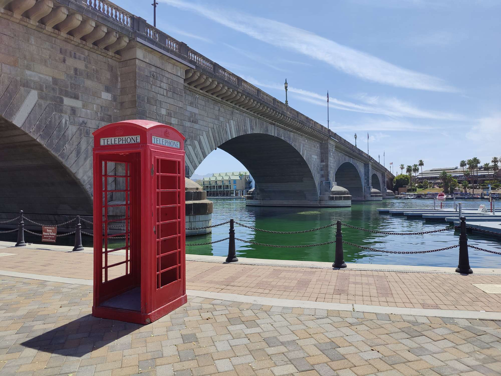
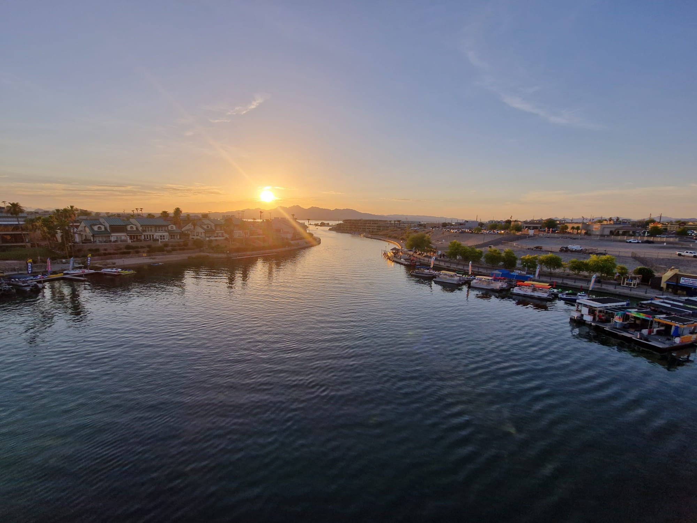

Lake Havasu City
Am Morgen des 20. Juli verliessen wir den Grand Canyon bereits wieder und fuhren weiter in Richtung Süd-Westen. Dabei fuhren wir ein Stück auf der ehemaligen Route 66. Eigentlich wäre das nächste grosse Ziel unserer Reise die Stadt San Diego, jedoch entschieden wir uns aufgrund der grossen Distanz dazu in Lake Havasu City einen Zwischenstopp einzulege. Obwohl dies die wohl heisseste Stadt (122°F = 50°C) in Arizona ist bereuten wir den Stopp hier absolut nicht. Hier in Havasu City steht nämlich die alte London Bridge...was soll das nun heissen...die alte London Bridge?! Ja genau es handelt sich dabei tatsächlich um die ehemalige London Bridge. Diese wurde im Jahr 1968 in London Stein für Stein abgebaut, nach Lake Havasu City transportiert und hier wieder genau gleich aufgebaut, wie zuvor in London. Und wer dies nun nicht glaubt, kann gerne Google fragen.😉  In dieser Stadt erhält man beinahe mehr London - Souveniers als in London selbst. Wer also ebenfalls einmal in dieser Gegend unterweg ist, sollte unbedingt einen Stopp hier in Lake Havasu City einlegen. Am See selbst hätte man auch viele tolle Möglichkeiten etwas zu unternehmen, wie z.B. Jetski fahren. Uns war es jedoch einfach zu heiss hier, um auf einen Jetski zu steigen. Da wir wieder einmal zu früh im Hotel angekommen sind und unser Zimmer noch nicht beziehen konnten, gönnten wir uns in einem Restaurant nebed der London Bridge noch ein Eiscreme...was würde bei diesen Temperaturen auch sonst besser passen?! Naja, wir vergassen für einmal, dass wir in Amerika sind und bestellten leichtsinnigerweise beide eine grosse Portion Eiscreme. Wie sich dann herausstellte hätte von einer Portion eine ganze Familie essen können. 🙈 Nachdem wir unser Zimmer bezogen hatten, fuhren wir zu einem Restaurant, welches uns von der Rezeptionistin des Hotels empfohlen wurde. Und wie sich zeigte war dies eine gute Empfehlung, denn zum ersten Mal in unseren Flitterwochen, assen wir etwas wirklich Leckeres (und kein Fastfood) zu Abend. Nach dem Abendessen liessen wir den Abend mit einem Spatziergang über die London Bridge ausklingen. 